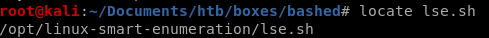

Linux smart enumeration
its always good habit to run a privilege escalation script to catch anything that may otherwise be hard to spot,a favorite of mine is lse.sh (linux smart enumeration) because its report is very easy to follow and comprehend

if you don't have it I highlt recommend downloading it to your /opt folder

